Linear Regression
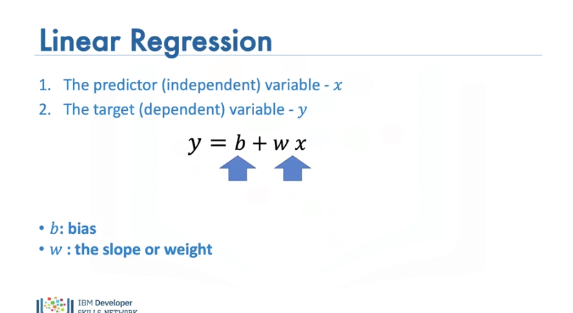
In this section we will review linear regression in one dimension and how to build the model using PyTorch. In the video we will review: Simple Linear regression 1-D, The Problem of Prediction. In Pytorch we will cover the building blocks of the neural network including: The Class Linear, How to Build Custom Modules using nn.Modules. Linear Regression is: A method to help us understand the relationship between two variables: The predictor (independent) variable x sometimes called a feature The target (dependent) variable y. We would like to come up with a linear relationship between the variables, This is sometimes called a linear mapping but in the one dimensional case, it just the equation of a line. The parameter is b bias, the parameter w one is the slope or in Pytorch this is called the weight. When we fit or train the model, we will come up with these parameters. We call this a model, as it models the relationship between x and y. Let's clarify the prediction step.
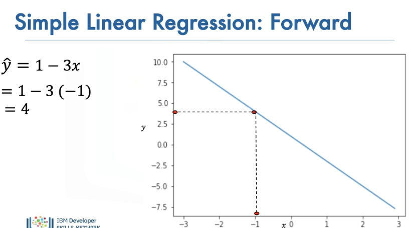
The line will map the dependent variable x, to the estimated value of y, the hat on the y indicates it's an estimate. In pytorch, we call the prediction step the forward step.
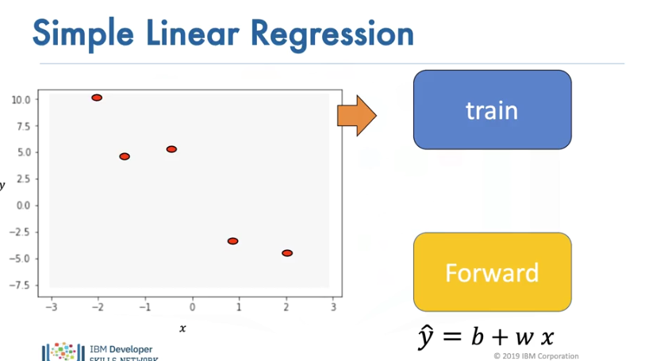
In linear regression we have two steps: We have a set of training points, we use these training points to fit or train the model and get parameters. We then use these parameters in the model. We now have a model; we use the hat on the y to denote this model as an estimate. We can use this model to predict any values of y given any x.
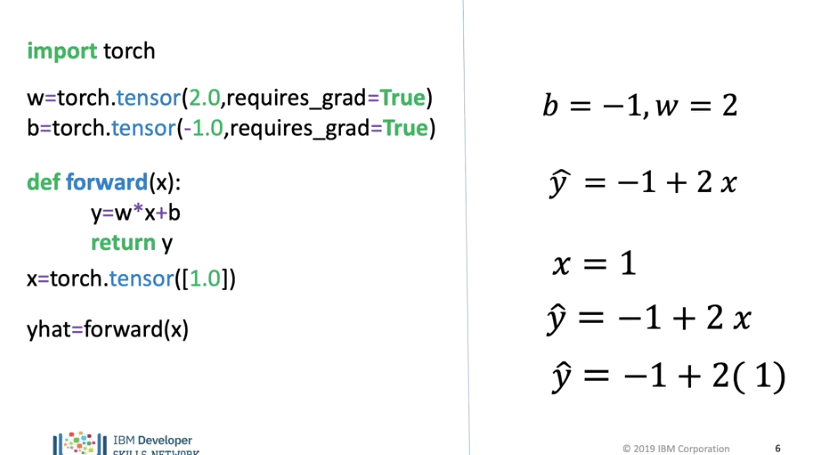
Before we discuss how to learn the parameters, let's see how to make a prediction using some arbitrary values. We create two tensors representing the Bias and slope, as we have to learn them we set the option requires_grad=True. In this case we set the bias to -1 and the slope to 2. We define the function forward that will make the prediction. We call the input x, on the right we include a hat to indicate it’s an estimate of the true y. We create a one by one PyTorch tensor. We then call the function with the tensor x as an input; We are merely mapping x to y using the equation of the line as shown on the right side of the screen. A result is a tensor representing our output.
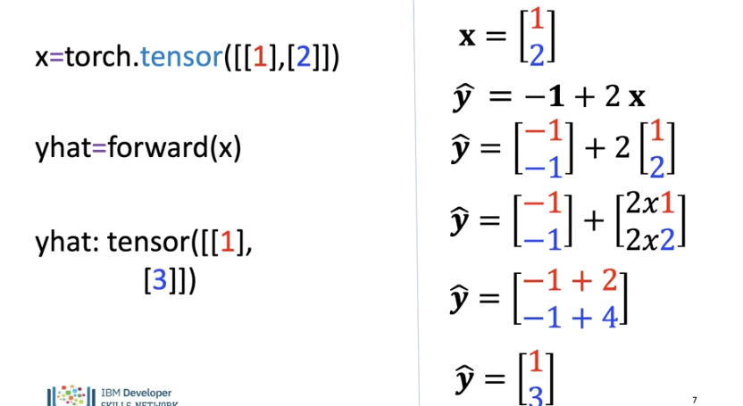
We can apply the equation of the line to multiple values. Each row represents a different sample, so we create a tensor with 2 rows and one column, the vector equivalent is shown on the left. We input the tensor to the function, and it applies the linear function to every row in the tensor, on the left we show the equivalent where each row is a different colour. The result is a new tensor, for each row of the tensor the linear function has been applied.
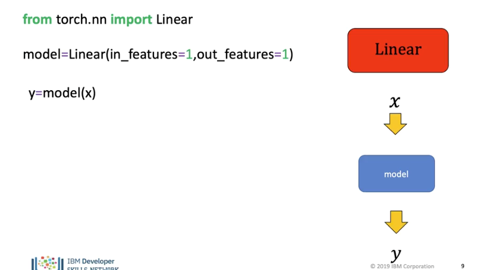
PyTorch has built in packages and classes, a useful class is Linear, for now these packages seem a little overkill but the will help us build more complex models later and are an important building block of Neural networks. We will use the constructor linear to produce an object in this case called model, we will use the object model to make a prediction.
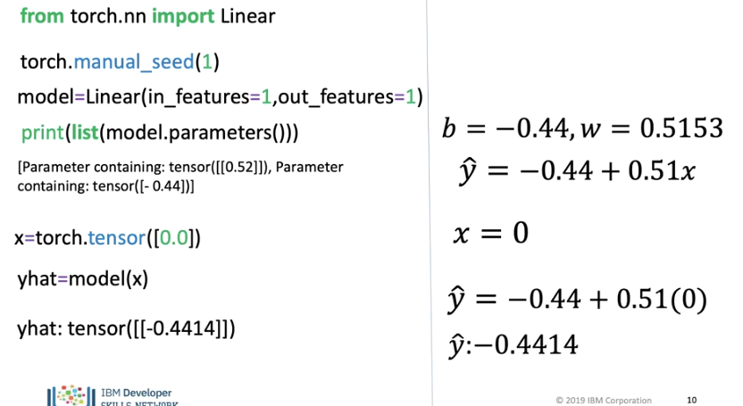
We import linear from the nn package. The slope and bias are randomly initialized, to get the same results every time we run the code we use the random seed, we will learn how parameters are obtained in the next section, We create a model object using the constructer linear, the parameter “in features” is the size of each input sample or the number of columns, “out features” is the size of each output sample, it essentially creates a linear function as shown in the right side of the screen. An important method is parameters, this gives us the model parameters The first is the slope the second is the bias, we have to apply the python function list to get an output as the method is lazily evaluated. We create a 1x1 tensor for the input, we call the model object to make a prediction, we do not need to call the forward method explicitly only require the parentheses, the tensor is the argument. The output is a 1x1 tensor.
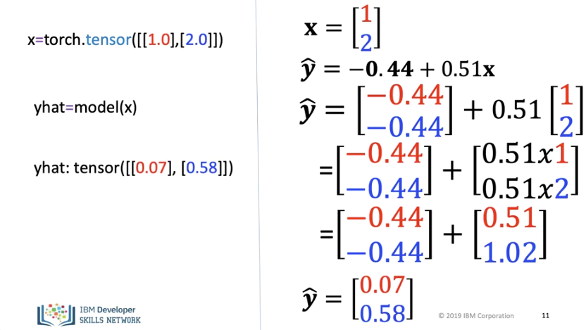
We can input multiple values, as before each sample is a row in a tensor We call the object model, and the bias is added just like vector operations as shown on the right. This is equivalent to calling the method forward. The result is a new tensor, for each row the value is multiplied by the slope and the bias is added.
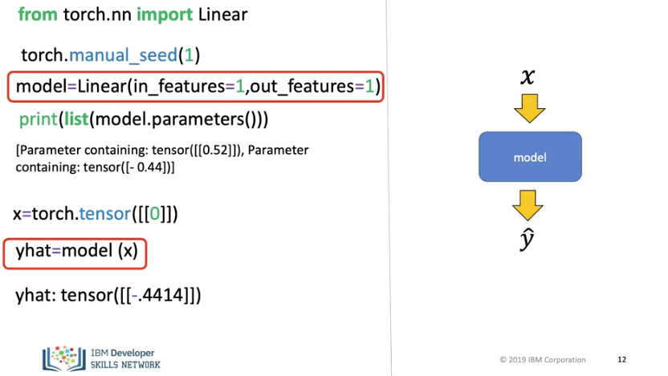
To review, to create a one-dimensional linear regression model, we create or instantiate a linear object, in this case, we call it the model. Instead of calling the method forward we merely use the name of the object with the input in this case x in parenthesis.
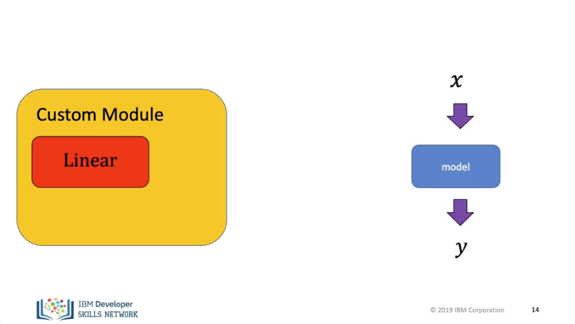
In Pytorch it is customary to make a custom module to create a model, using the package nn.Module. This is just a Python object. A custom module allows us to wrap multiple objects to make more complex modules. In this example we will create a custom model that just uses a linear model. We will create a custom module for a linear regression.
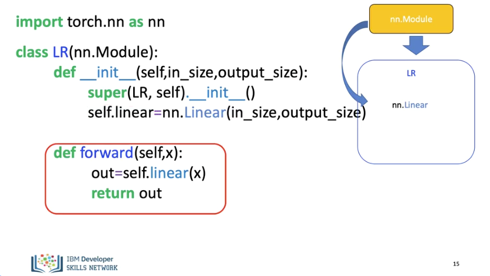
Custom modules are classes; these classes are the subclass or Children of the package nn.Module. In this case, we call our custom module LR. We make the Class a child of nn.Modules, as a result, it inherits all the methods and attributes. In the object constructor, the argument is the size of the input and output, x and y respectively. We call the super constructor this allows us to create objects from the package nn.Module inside the object without initializing it explicitly. We can now create an object of type linear the arguments are set via the object constructor, we assign it to self.linear we can now call the object of type Linear anywhere in the class. We use the function forward to produce a prediction. We will not have to call the forward method explicitly just use parenthesis as it behaves like the call method in python.
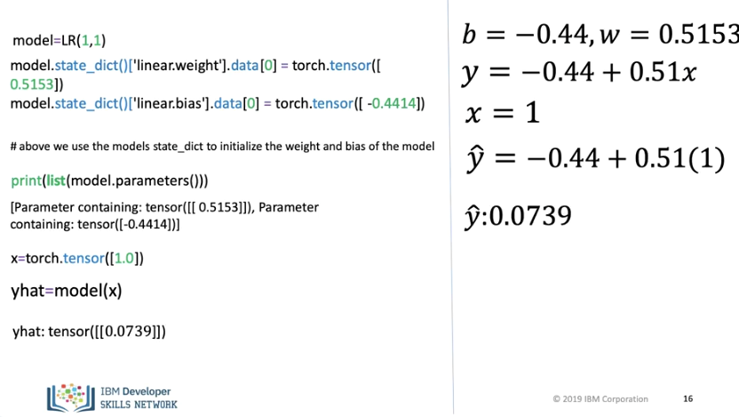
We create a model using the constructor, the arguments are the size of the model, the parameters are initialized randomly. In this case this is just the equation of a line. In the lab we use the method state_dict()[ to change the parameter values, we will talk about this a little later. You can print out the slope and bias, we can do this because the object is a subclass of Modules. As before we create an input. We call the object to generate an output, we do not have to call forward explicitly, we just need to use the parenthesis. The result is a new tensor.
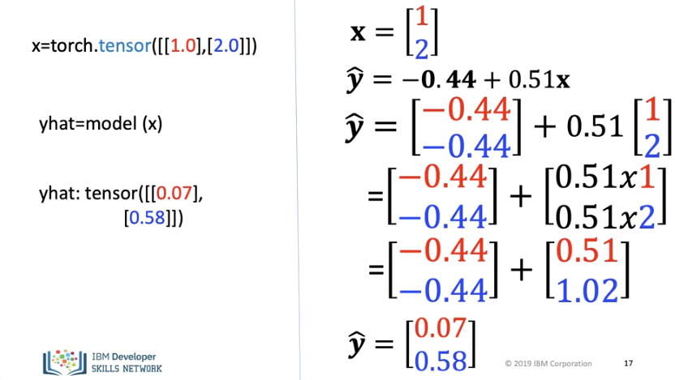
We can use our custom module to make multiple predictions The object maps every row in the tensor using the line. The result is a new tensor, for each row the value is multiplied by the slope and the bias is added
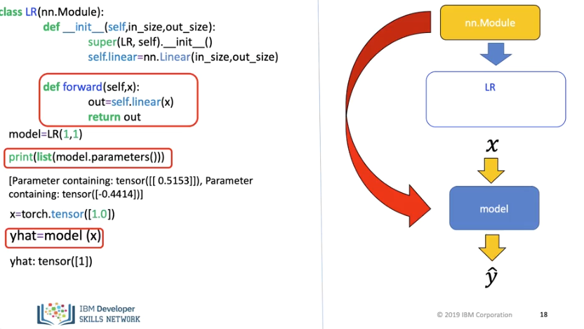
In Summary, we now create a custom module which is our own class, we can create an object of that class. As the class is a child of nn.Module, we can obtain the parameters via the method parameters. We can use the object to make a prediction, we do not have to call the forward method explicitly.
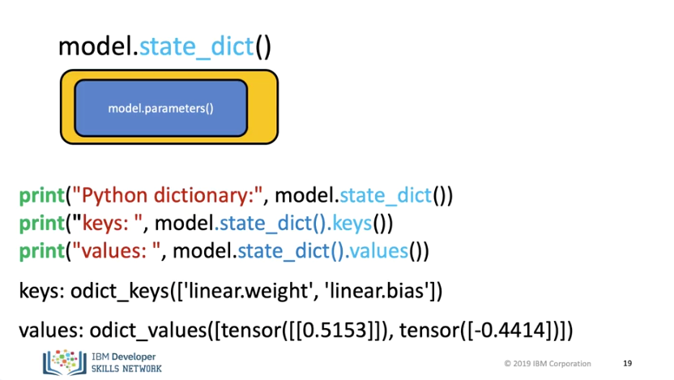
Finally, an important method is state_dict(); this returns a python dictionary. We will use it as our models get more complex. One Function is to map the relationship of the linear layers to its parameters. we can print out the keys and values. Now lets see how to train the model.